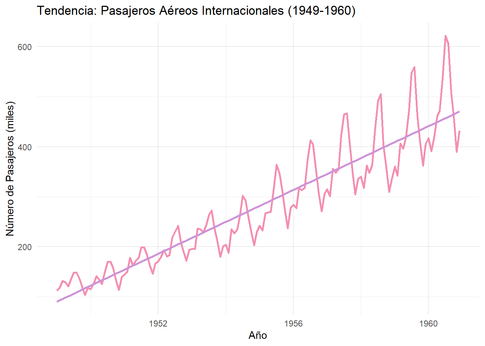
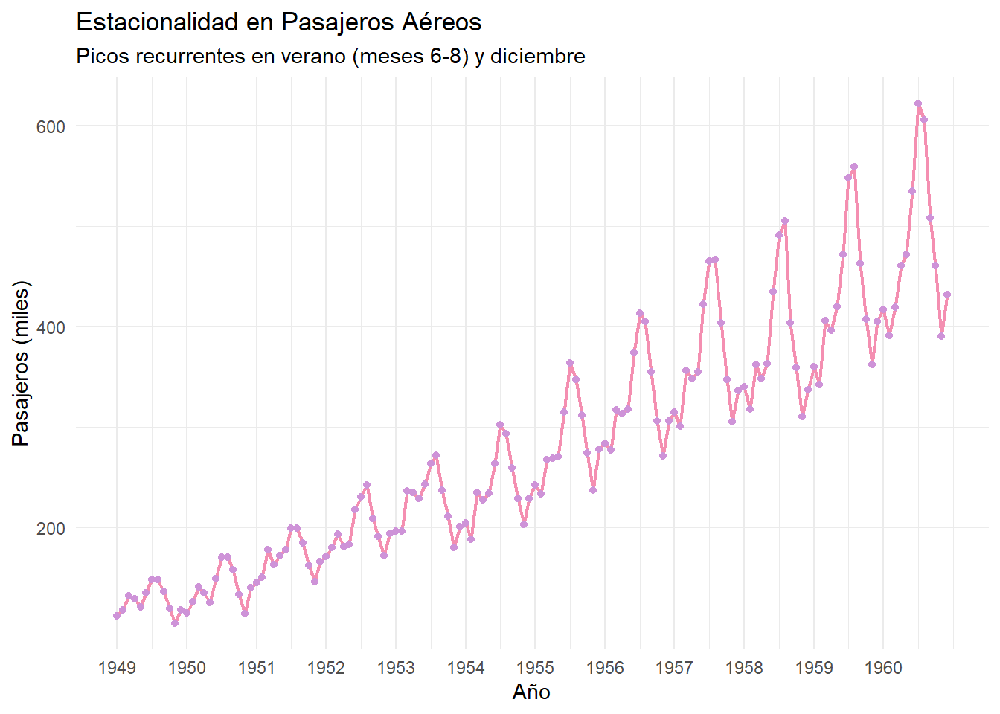
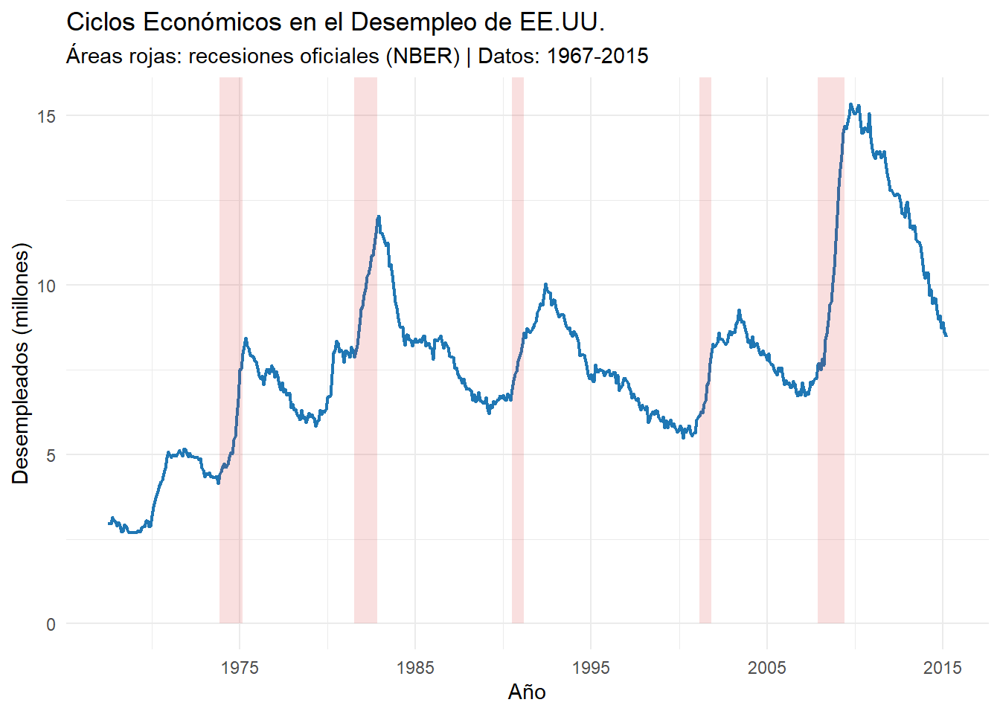

Una serie de tiempo es una secuencia de observaciones numéricas registradas en intervalos regulares a lo largo del tiempo. Entre los ejemplos más comunes se encuentran las temperaturas mensuales en una ciudad, los precios diarios de acciones en la bolsa o las ventas trimestrales de un producto. Su característica distintiva es la dependencia temporal, es decir, que el valor actual suele estar influenciado por observaciones pasadas.
2.2 Fundamento, estructura y componentes
2.2.1 Definición
Formalmente, una serie de tiempo es una colección ordenada de datos cuantitativos observados en momentos sucesivos. Esta naturaleza cronológica implica que las observaciones no son independientes, sino que tienden a mostrar correlaciones a lo largo del tiempo.
2.2.2 Elementos Clave
Las series de tiempo poseen varios aspectos estructurales fundamentales:
Orden Cronológico: Las observaciones están dispuestas secuencialmente en el tiempo, lo que permite analizar cómo evolucionan los fenómenos observados.
Frecuencia de Medición: Define la resolución temporal del análisis. Puede variar desde intervalos muy cortos (como milisegundos en transacciones bursátiles) hasta intervalos largos (como trimestres en reportes económicos).
Componentes Sistemáticos: Las series de tiempo suelen mostrar patrones recurrentes además de fluctuaciones aleatorias. Estos componentes incluyen:
Tendencia: Cambios a largo plazo, ya sea ascendentes o descendentes.
Estacionalidad: Fluctuaciones regulares en intervalos fijos, como los aumentos en ventas durante diciembre.
Ciclicidad: Oscilaciones de largo plazo no necesariamente periódicas, asociadas a factores económicos.
Ruido: Variabilidad no sistemática que no puede explicarse por los componentes anteriores.
2.3 Componentes fundamentales
La descomposición estructural permite analizar series de tiempo dinámicas. Los cuatro componentes esenciales son: tendencia, estacionalidad, ciclo e irregularidad.
2.3.1 Tendencia
Refleja un crecimiento o decrecimiento sostenido en el tiempo. Por ejemplo, el número de pasajeros aéreos muestra un incremento constante a lo largo de 12 años, con una pendiente del 12% anual, asociada al auge del turismo y los negocios internacionales tras la Segunda Guerra Mundial.
Código
# -------------------------------# 1. Tendencia (Ejemplo: Pasajeros aéreos)# -------------------------------data("AirPassengers")trend_data <-data.frame(fecha =time(AirPassengers) %>%as.numeric(),pasajeros =as.numeric(AirPassengers))ggplot(trend_data, aes(x = fecha, y = pasajeros)) +geom_line(color ="#F48FB1", linewidth =1) +geom_smooth(method ="lm", color ="#CE93D8", se =FALSE) +labs(title ="Tendencia: Pasajeros Aéreos Internacionales (1949-1960)",x ="Año",y ="Número de Pasajeros (miles)") +theme_minimal()

Esta gráfica representa el número de pasajeron mensual en vuelos internacionales (1949-1960). Se observa un crecimiento sostenido debido a la expansión de la aviaci;ón comercial.
2.3.2 Estacionalidad
La estacionalidad se refiere a fluctuaciones periódicas y predecibles en los datos, que se repiten en intervalos regulares (diarios, mensuales, anuales). Surge de factores recurrentes como festividades, condiciones climáticas o ciclos comerciales.
Código
# -------------------------------# 2. Estacionalidad # -------------------------------data("AirPassengers")df_air <-data.frame( año =floor(time(AirPassengers)), # Extraer añomes =cycle(AirPassengers), # Extraer mes (1-12)pasajeros =as.numeric(AirPassengers))ggplot(df_air, aes(x = año + (mes-1)/12, y = pasajeros)) +geom_line(color ="#F48FB1", linewidth =0.8) +geom_point(color ="#CE93D8", size =1.5) +labs(title ="Estacionalidad en Pasajeros Aéreos",subtitle ="Picos recurrentes en verano (meses 6-8) y diciembre",x ="Año",y ="Pasajeros (miles)" ) +scale_x_continuous(breaks =1949:1960) +theme_minimal()

Podemos notar lo siguiente: 1. Picos Recurrentes:
- Verano (Junio-Agosto):
Aumento del 35-40% en pasajeros respecto al promedio anual, impulsado por vacaciones escolares y turismo estival.
- Diciembre:
Segundo pico del 25-30% por viajes navideños y de fin de año.
Valles Pronunciados:
Enero-Febrero:
Caída del 20-25% por reducción de viajes post-festivos y clima invernal en el hemisferio norte.
2.3.3 Ciclos
Representan fluctuaciones prolongadas, pero no periódicas. Un ciclo económico puede durar entre 7 y 10 años, como la expansión entre 1991–2001 o la recesión de 2008. Sus picos y valles se asocian con innovaciones tecnológicas o crisis financieras, respectivamente.
Código
# -------------------------------# 3. Ciclo# -------------------------------# Cargar datos y definir recesiones (fuente: NBER)recesiones <-data.frame(inicio =as.Date(c("1973-11-01", "1981-07-01", "1990-07-01", "2001-03-01", "2007-12-01")),fin =as.Date(c("1975-03-01", "1982-11-01", "1991-03-01", "2001-11-01", "2009-06-01")))# Gráfico con ciclos económicosggplot(economics) +geom_line(aes(x = date, y = unemploy/1000), color ="#1f77b4", linewidth =0.8) +geom_rect(data = recesiones,aes(xmin = inicio, xmax = fin, ymin =0, ymax =Inf),fill ="#d62728", alpha =0.15 ) +labs(title ="Ciclos Económicos en el Desempleo de EE.UU.",subtitle ="Áreas rojas: recesiones oficiales (NBER) | Datos: 1967-2015",x ="Año",y ="Desempleados (millones)" ) +scale_x_date(date_breaks ="10 years", date_labels ="%Y") +theme_minimal()

Se puede apreciar fluctiaciones no periodicas vinculadas a eventos macroeconomicos. Estas se deben a la crisis petrolera (1973-75), una politica de antiinflación (Volcker Schock, 1981-82) y a una crisis financiera (2007-09).
2.3.4 Irregularidad
Incluye eventos impredecibles. Por ejemplo, un pico repentino en Q4/2023 por la aprobación de un ETF de Bitcoin, o una caída en Q1/2024 causada por un ciberataque. La desviación estándar del 45% refleja alta volatilidad.
Aquí se notan fluctuaciones no sistemáticas que pueden ser causadas por eventos imprevistos, errores de medición o solo comportamientos aleatorios del mercado.
2.4 Esperanza de una serie de Tiempo
La esperanza \(E(Y_t)\) de una serie \(\{Y_t\}\) representa su valor promedio teórico en el tiempo \(t\). Este concepto central se estudia con el supuesto de que el error \(\varepsilon_t\sim N(0,\sigma^2)\) es ruido blanco gaussiano.
Interpretación:
- La serie fluctúa alrededor de una media constante \(\mu\).
- Ejemplo: Temperatura promedio mensual en una región estable.
Tendencia Lineal con Ruido Blanco
Modelo: \[
Y_t = \beta t + \varepsilon_t
\]
Cálculo de la Esperanza: \[
E(Y_t) = E(\beta t + \varepsilon_t) = \beta t + E(\varepsilon_t) = \beta t
\]
Interpretación:
- La media de la serie crece/decrece linealmente con el tiempo.
- Ejemplo: Ventas anuales de un producto en expansión.
2.4.2 Propiedades Clave
Linealidad:
Si \(Y_t = a X_t + b\), entonces \(E(Y_t) = a E(X_t) + b\).
Independencia del Ruido: \(E(\varepsilon_t) = 0\) implica que el ruido no afecta la esperanza teórica.
Estacionariedad en Media:
Si \(E(Y_t) = \mu\) (constante), la serie es estacionaria en media.
2.5 Autocovarianza de una serie de Tiempo
La autocovarianza mide la dependencia lineal entre dos observaciones de una serie temporal separadas por un retardo \(j\). Para una serie \(\{Y_t\}_{t=0}^\infty\), se define como:
La distribución conjunta de \((Y_t, Y_{t-1}, \ldots, Y_{t-j})\) permite derivar las autocovarianzas.
2.5.1 Interpretación
Autocovarianza de orden\(j\) (\(\gamma_j\)):
Mide cómo \(Y_t\) covaría con su valor pasado \(Y_{t-j}\).
Si \(\gamma_j > 0\): Valores altos/bajos de \(Y_t\) tienden a asociarse con valores altos/bajos de \(Y_{t-j}\).
Si \(\gamma_j < 0\): Valores altos de \(Y_t\) se vinculan con valores bajos de \(Y_{t-j}\), y viceversa.
Autocovarianza de orden 0 (\(\gamma_0\)): \[
\gamma_0 = \mathbb{E}\left[(Y_t - \mu_t)^2\right] = \text{Var}(Y_t)
\]
Es la varianza de la serie, es decir, la dispersión de \(Y_t\) alrededor de su media.
2.6 Autcorrelación de una serie de Tiempo
2.6.1 Definición del Coeficiente de Autocorrelación
El coeficiente de autocorrelación de orden \(k\) para una serie de tiempo \(\{Y_t\}_{t=0}^\infty\) se define como:
La función de autocorrelación (ACF) es la colección de valores \(\{\rho_k\}\) para \(k = 0, 1, 2, \ldots\).
Propiedades clave:
1. Adimensional:
- \(\rho_k\) no depende de la escala de medición de la serie.
- Valores en \([-1, 1]\).
2. Simetría:
- \(\rho_k = \rho_{-k}\) (simétrica alrededor de \(k=0\)).
3. Interpretación:
- \(\rho_k = 1\): Correlación perfecta positiva en retardo \(k\).
- \(\rho_k = -1\): Correlación perfecta negativa en retardo \(k\).
Ejemplo Gráfico de la ACF
2.6.3 Cálculo de la ACF Muestral
Para una serie de \(T\) observaciones, la ACF muestral se estima como: \[
\hat{\rho}_k = \frac{\sum_{t=1}^{T-k} (Y_t - \overline{Y})(Y_{t+k} - \overline{Y})}{\sum_{t=1}^T (Y_t - \overline{Y})^2}, \quad k = 0, 1, \ldots, K
\]
donde \(\overline{Y}\) es la media muestral y \(K \approx T/4\) (regla práctica).
Nota: La ACF es una herramienta fundamental en el análisis de series de tiempo, utilizada en modelos como ARIMA y para diagnósticos de estacionariedad.
2.7 Autocovarianza y Autocorrelación Muestral
En el análisis de series de tiempo, la estimación de la autocovarianza y autocorrelación muestral es esencial para identificar patrones de dependencia temporal en conjuntos de datos finitos. Para una serie de tiempo \(Y_1, Y_2, \ldots, Y_T\), estas funciones se calculan de la siguiente manera:
2.7.1 Estimación de la Autocovarianza
La autocovarianza muestral de orden \(k\), denotada como \(c_k\), se define mediante: \[
c_k = \frac{1}{T} \sum_{t=1}^{T-k} (Y_t - \bar{Y})(Y_{t+k} - \bar{Y}),
\]
donde \(\bar{Y}\) es la media muestral de la serie. Este estimador utiliza un divisor \(T\) (en lugar de \(T - k\)) para garantizar que la matriz de autocovarianza sea definida positiva, aunque introduce un ligero sesgo en muestras pequeñas. La simetría de la función (\(c_k = c_{-k}\)) facilita su interpretación en aplicaciones prácticas.
2.7.2 Función de Autocorrelación Muestral (ACF)
La autocorrelación muestral estandariza la autocovarianza para obtener valores adimensionales entre \(-1\) y \(1\): \[
r_k = \frac{c_k}{c_0}, \quad \text{con } c_0 = \frac{1}{T} \sum_{t=1}^T (Y_t - \bar{Y})^2.
\]
Aquí, \(c_0\) corresponde a la varianza muestral. Un valor de \(r_k\) cercano a \(1\) indica una correlación positiva fuerte en el retardo \(k\), mientras que \(r_k \approx -1\) sugiere una correlación negativa. Valores próximos a \(0\) implican independencia lineal.
2.7.3 Consideraciones para una Estimación Confiable
Para minimizar errores en la estimación, se recomienda un tamaño muestral mínimo de \(T \geq 50\). Esto reduce la varianza de los estimadores, particularmente en retardos altos. Además, el retardo máximo \(K\) suele fijarse como \(K \approx T/4\), equilibrando la captura de patrones relevantes y la evitación de ruido. Por ejemplo, en una serie con \(T = 100\), se calcularían autocorrelaciones hasta \(K = 25\).
2.7.4 Aplicaciones en el Análisis
La ACF muestral es fundamental para identificar componentes como estacionalidad (picos en retardos específicos, como \(k = 12\) en datos mensuales) o ruido blanco (valores dentro de intervalos de confianza). En modelos ARIMA, los residuos deben exhibir una ACF compatible con ruido blanco para validar su adecuación.
Esta sección subraya la importancia de estas herramientas en la modelización de series temporales, proporcionando una base para técnicas avanzadas como la descomposición estacional y la predicción.
2.8 Autocorrelación Parcial de una Serie de Tiempo
La autocorrelación parcial (PACF, por sus siglas en inglés) es una medida que cuantifica la correlación entre dos observaciones de una serie temporal, \(Y_t\) y \(Y_{t-k}\), después de eliminar el efecto lineal de las observaciones intermedias \(Y_{t-1}, Y_{t-2}, \ldots, Y_{t-k+1}\). Este concepto se basa en el principio de correlación parcial entre variables aleatorias, ajustando por factores de confusión.
2.8.1 Fundamentos Teóricos
Sean \(X\), \(Y\), y \(Z\) variables aleatorias. La correlación parcial entre \(X\) e \(Y\), ajustando por \(Z\), se obtiene mediante los siguientes pasos:
1. Regresión lineal de \(X\) sobre \(Z\): \[
\hat{X} = a_1 + b_1 Z, \quad b_1 = \frac{\text{Cov}(Z, X)}{\text{Var}(Z)}.
\]
2. Regresión lineal de \(Y\) sobre \(Z\): \[
\hat{Y} = a_2 + b_2 Z, \quad b_2 = \frac{\text{Cov}(Z, Y)}{\text{Var}(Z)}.
\]
3. Residuos: \[
X^* = X - \hat{X}, \quad Y^* = Y - \hat{Y}.
\]
La correlación parcial entre \(X\) e \(Y\) (ajustando por \(Z\)) es la correlación entre los residuos \(X^*\) y \(Y^*\).
2.8.2 Aplicación a Series de Tiempo
Para una serie temporal \(\{Y_t\}\), la autocorrelación parcial en el retardo \(k\) se define como la correlación entre \(Y_t\) y \(Y_{t-k}\), tras eliminar la influencia de \(Y_{t-1}, Y_{t-2}, \ldots, Y_{t-k+1}\). Matemáticamente: \[
\text{PACF}(k) = \text{Corr}(Y_t^*,\, Y_{t-k}^*),
\]
donde \(Y_t^*\) y \(Y_{t-k}^*\) son los residuos de regresiones lineales que ajustan por los rezagos intermedios.
Interpretación
\(\text{PACF}(k) \neq 0\): Indica una dependencia directa entre \(Y_t\) y \(Y_{t-k}\) no mediada por rezagos anteriores.
\(\text{PACF}(k) \approx 0\): Sugiere que la correlación en el retardo \(k\) se explica completamente por los rezagos intermedios.
2.8.3 Relevancia en Modelado
La PACF es crítica en modelos autorregresivos (AR). Por ejemplo, en un proceso AR(p):
- La PACF tiene cortes abruptos en el retardo \(p\).
- Los valores significativos en \(\text{PACF}(k)\) para \(k \leq p\) ayudan a determinar el orden del modelo.
2.9 Definición Formal de la Autocorrelación Parcial y Ecuaciones de Yule-Walker
2.9.1 Ecuaciones de Yule-Walker para Procesos AR
Para un modelo de serie de tiempo estacionaria \(\{Y_i\}_{i \geq 0}\), las ecuaciones de Yule-Walker relacionan los coeficientes autorregresivos (\(\phi_{ik}\)) con la función de autocorrelación (\(\rho(j)\)). Para un orden fijo \(k\), estas ecuaciones se expresan como:
El sistema de ecuaciones se representa matricialmente como: \[
\begin{pmatrix}
1 & \rho(1) & \rho(2) & \cdots & \rho(k-1) \\
\rho(1) & 1 & \rho(1) & \cdots & \rho(k-2) \\
\rho(2) & \rho(1) & 1 & \cdots & \rho(k-3) \\
\vdots & \vdots & \vdots & \ddots & \vdots \\
\rho(k-1) & \rho(k-2) & \rho(k-3) & \cdots & 1
\end{pmatrix}
\begin{pmatrix}
\phi_{1k} \\
\phi_{2k} \\
\phi_{3k} \\
\vdots \\
\phi_{kk}
\end{pmatrix}
=
\begin{pmatrix}
\rho(1) \\
\rho(2) \\
\rho(3) \\
\vdots \\
\rho(k)
\end{pmatrix},
\]
o, en forma compacta: \[
P_k \phi_k = \rho_k,
\]
donde \(P_k\) es la matriz de autocorrelaciones y \(\rho_k\) es el vector de autocorrelaciones hasta el retardo \(k\).
2.9.3 Solución y Autocorrelación Parcial
Los coeficientes \(\phi_k\) se obtienen invirtiendo la matriz \(P_k\): \[
\phi_k = P_k^{-1} \rho_k.
\]
El último coeficiente del vector \(\phi_k\), denotado \(\phi_{kk}\), corresponde a la autocorrelación parcial en el retardo\(k\).
Interpretación de \(\phi_{kk}\)
\(\phi_{kk} \neq 0\): Indica una dependencia directa entre \(Y_t\) y \(Y_{t-k}\) no explicada por los rezagos intermedios.
\(\phi_{kk} \approx 0\): La correlación en el retardo \(k\) se debe completamente a los rezagos anteriores.
2.9.4 Ejemplo: Proceso AR(2)
Para un modelo AR(2) (\(k=2\)): \[
\phi_{22} = \frac{\rho(2) - \rho(1)^2}{1 - \rho(1)^2}.
\]
Este valor representa la autocorrelación parcial en el retardo 2, crucial para identificar el orden del modelo.
2.9.5 Aplicación en Identificación de Modelos
Corte en la PACF: En procesos AR(p), la PACF tiene valores significativos hasta el retardo \(p\) y luego cae abruptamente.
Esta metodología es fundamental para seleccionar órdenes en modelos autorregresivos y validar supuestos de estacionariedad.
2.10 Estacionariedad en Series de Tiempo
Un proceso \(\{Y_t\}\) se define como estacionario en covarianza (o débilmente estacionario) cuando satisface dos condiciones fundamentales:
2.10.1 Condiciones para la estacionariedad débil
1. Media constante
La esperanza matemática de \(Y_t\) permanece invariante en el tiempo: \[
\mathbb{E}(Y_t) = \mu \quad \text{para todo } t.
\]
Por ejemplo, en una serie de ventas mensuales estacionaria, no existirían tendencias ascendentes o descendentes a largo plazo, manteniendo un promedio estable.
2. Autocovarianzas dependientes del lag
La covarianza entre \(Y_t\) y \(Y_{t-j}\) solo depende del desplazamiento temporal \(j\), no del instante \(t\): \[
\mathbb{E}[(Y_t - \mu)(Y_{t-j} - \mu)] = \gamma_j \quad \text{para todo } t \text{ y cualquier } j.
\]
Esto implica que la relación entre observaciones separadas por \(j\) periodos es constante. Por ejemplo, la correlación entre las ventas de enero y febrero sería idéntica a la de febrero y marzo si \(j=1\).
2.10.2 Prueba de Dickey-Fuller: Validando la estacionariedad
Esta prueba estadística detecta la presencia de una raíz unitaria, señal de no estacionariedad. Su interpretación es clave:
- Si el estadístico de prueba es menor que los valores críticos (1%, 5%, 10%), se rechaza la hipótesis nula de raíz unitaria.
- Esto confirma que la serie es estacionaria, permitiendo modelarla con técnicas como ARMA o ARIMA.
2.10.3 Técnicas para lograr estacionariedad
Diferenciación
Transformar la serie calculando la diferencia entre observaciones consecutivas: \[
\Delta Y_t = Y_t - Y_{t-1}.
\]
Esto elimina tendencias deterministas y reduce la dependencia temporal.
Transformaciones no lineales
- Aplicar logaritmos: \(\log(Y_t)\) para estabilizar varianzas.
- Diferenciación estacional: \(\Delta_{12} Y_t = Y_t - Y_{t-12}\) en datos mensuales con patrones anuales.
2.10.4 Estacionariedad débil vs. estricta
Estacionariedad débil
Requiere media constante y autocovarianzas que dependen solo del lag \(j\). Es la base de modelos como ARMA, al ser menos restrictiva y más aplicable en la práctica.
Estacionariedad estricta
Exige que todas las distribuciones conjuntas (no solo media y covarianza) sean invariantes en el tiempo. Es teóricamente robusta pero raramente verificable en datos reales.
2.11 Ejemplos ilustrativos de estacionariedad en series de tiempo
Propiedades:
1. Media constante: \[
\mathbb{E}(Y_t) = \mu \quad \text{para todo } t.
\]
La ausencia de términos dependientes de \(t\) garantiza que la media no varíe con el tiempo.
Autocovarianzas: \[
\gamma_j = \mathbb{E}[(Y_t - \mu)(Y_{t-j} - \mu)] =
\begin{cases}
\sigma^2 & \text{si } j = 0 \\
0 & \text{si } j \neq 0
\end{cases}.
\]
Las autocovarianzas solo dependen del lag \(j\), no de \(t\).
Propiedades:
1. Media variable: \[
\mathbb{E}(Y_t) = \beta t.
\]
La presencia del término \(\beta t\) introduce una tendencia lineal, haciendo que la media crezca con \(t\).
Autocovarianzas:
Aunque las autocovarianzas para \(j \neq 0\) son cero (como en el caso estacionario), la dependencia temporal de la media viola la condición de estacionariedad.
2.11.3 Comparación clave
Característica
Caso estacionario
Caso no estacionario
Media
Constante (\(\mu\))
Depende de \(t\) (\(\beta t\))
Autocovarianzas
Dependen solo de \(j\)
Dependen de \(j\), pero media variable
Tendencia
Ausente
Lineal (\(\beta t\))
Importancia práctica:
- Los modelos como ARMA requieren estacionariedad. Si una serie tiene tendencia (como el segundo caso), se debe aplicar diferenciación: \[
\Delta Y_t = Y_t - Y_{t-1} \quad \text{(elimina tendencias deterministas)}.
\]
- La prueba de Dickey-Fuller ayuda a detectar no estacionariedad causada por raíces unitarias o tendencias.
Abraham, Bovas, y Johannes Ledolter. 1983. Statistical Methods for Forecasting. 1.ª ed. New Jersey: Wiley.
Cowpertwait, Paul S. P., y Andrew V. Metcalfe. 2009. Introductory Time Series with R. 1.ª ed. Wiley series en probability y mathematical statistics. Applied probability y statistics. Baltimore: Springer.
Enders, Walter. 2015. Applied Econometric Time Series. 1.ª ed. New York: Wiley.
Hamilton, J. D. 2020. Times series Analysis. 1.ª ed. Wiley.
Montgomery, Douglas C., Cheryl L. Jennings, y Murat Kulahci. 2008. Introduction to Time Series Analysis and Forecasting. 1.ª ed. Wiley series en probability y mathematical statistics. Applied probability y statistics. New York: Wiley.